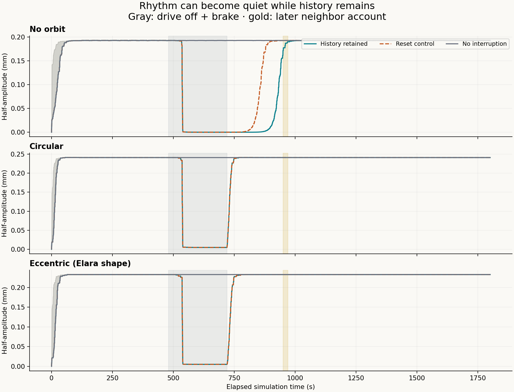
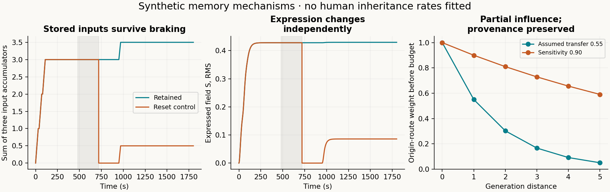
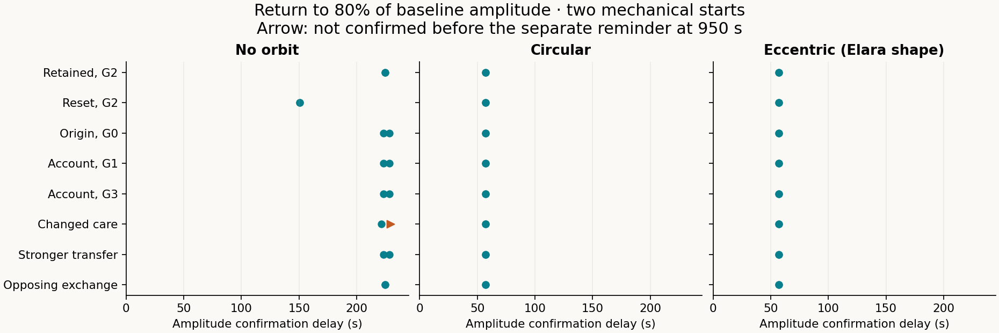
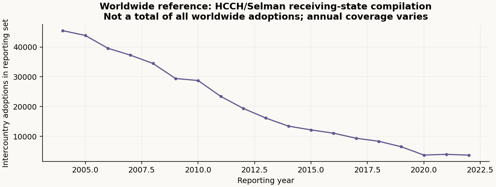

Earlier Hug comparison · Open animation
The new model preserves accumulated input and event provenance while limiting the expressed field. In the main cases, braking makes motion quiet without deleting history. Circular and eccentric forcing leave residual movement. These are synthetic model results, not measurements of clay, families or inherited trauma.
Play all three conditions together → · Short animation · Equations and declared changes · Worldwide adoption and ancestry references

Your accumulated-input equation remains. A permanent event record distinguishes direct experience from communicated family or neighbor history. The new source cap, expression relaxation and bounded pair exchange are explicit additions required for a finite limit. They do not erase the retained input. A later account is recorded as a later account, not the recipient’s own earlier experience.

Doubling acts only in the upper reference region. Both directed terms are exactly zero below the centreline for arbitrary finite states. Lower clay can still respond through material mechanics and field diffusion. Aligning/opposing are feedback signs, not judgments about people. Reversing S alone cannot reverse the source force because the source uses gradient magnitude.
The drive is off and braking is applied from 480 to 720 seconds. Every retained state is carried forward. Only the labeled reset control deletes working A and S at release. A neighbor reminder occurs at 950–970 seconds. The table shows the first starting history; the plots and CSV include both.
| Condition | Smallest braked amplitude / baseline | 80% amplitude confirmation after release | Mechanical 1-orbit repeat confirmation |
|---|---|---|---|
| No orbit | 0.000943% | 224.5 s | Not applicable |
| Circular | 1.99% | 57.0 s | 129.3 s |
| Eccentric (Elara shape) | 2.1% | 57.0 s | 157.8 s |
Amplitude uses a trailing 57-second window; the earliest eligible recovery report is 57 seconds after release. Confirmations above remain valid through 949.5 seconds, before the reminder. Orbital confirmation uses ten successive exact-checkpoint comparisons and a declared scaled tolerance of .01. No-orbit motion has no orbital synchronization label. These are finite-horizon tests, not a proof of a limit cycle or the earlier full-state four-lag criterion.

The reset control returns sooner without an orbit because deleting S changes the continuing memory force and shifts the mechanical equilibrium. That supplies a larger disturbance when the drive returns. This comparison does not show that forgetting helps people. One changed-caregiving start does not reach the amplitude criterion before the later reminder.
54 main trajectories. Maximum retained-accumulator error 8.66e-15; mechanical energy residual 1.86e-06 in the declared normalization. Maximum |S| is 1.1160, below the derived discrete bound 2.5146. The bound is not imposed by clipping.
The field is resolved along a material-coordinate ring. Its force is projected by virtual work onto the earlier clay shear mode. This is a documented reduction, not a complete moving-boundary fluid or rupture calculation. The field uses reference geometry and does not receive strain feedback. Spatial and temporal differences are reported rather than hidden; fine timing differences smaller than the reported diagnostic resolution should not be ranked.
The 64-cell check changes one no-orbit reset-control amplitude confirmation from 150.5 to 149.0 s. Other tested confirmation times agree at the reported resolution. The 128-cell check covers nine selected retained-history paths, not the reset control. The 57 s amplitude confirmations in the forced primary cases equal the minimum diagnostic waiting window.
Biological ancestry, prenatal exposure, caregiving and communicated family history are kept separate. Unknown ancestry remains unknown. A biological transmission channel is uncalibrated and disabled in these runs; this does not establish its absence in people. Adoption status and conformity are not parameters.

The HCCH/Selman compilation reports 45,482 in 2004 and 3,700 in 2022 within its intercountry receiving-state coverage. Domestic adoptions are not included. These counts are never used as trauma, transmission or exception rates. The 561-adoptee EGDS study informs the separation of family routes; it is not a world prevalence estimate or evidence of inherited personal memories.
Protocol · Model · Provenance ledger · All path summaries · Checks and refinement · Saved plot data · Evidence and limitations